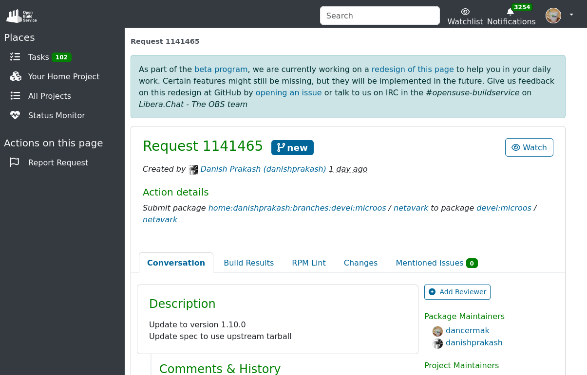

The Monolith versus The Swarm
A comparison of openSUSE's and Fedora's build infrastructure
who -u
Dan Čermák
| Software Developer @SUSE, SLE BCI releng | |
| i3 SIG, Package maintainer | |
| Developer Tools, Testing and Documentation, Home Automation | |
| https://dancermak.name | |
| dcermak | |
| @Defolos@mastodon.social |
Why?
- very similar distributions, but no shared ancestry
- vastly different build systems
- learn from each other?
Parts of a Build System

The Monolith
The Open Build Service
- distro building swiss army knife
- can build RPMs, DEBs, Arch tar.xz, containers, VMs, …
- automated rebuilds on transitive dependency changes
- custom version control system
- staging area
Overview
Projects and packages


Version Control
oscmimics subversion- no subfolders or branches
- branching creates new projects with a
_link
prjconf
- configure project building & publishing
- tweak macros & dependencies of a project
BuildFlags: sbom:spdx
PublishFlags: withsbom
Macros:
%suse_version 1699
%is_opensuse 1
%build_ldflags %{?_lto_cflags}
:Macros
Submitrequests

- send changes of a forked (aka "branched") package
- send new packages into projects
The Swarm

Pagure

- FLOSS git forge written in Python using Flask + PyGit
- every package has repositories for: source code, wiki, issues + pull requests, metadata of PRs
Koji
- RPM build system using mock
- only one production build per NEVR can exist
- builds persist for ever
Pungi

distribution composition tool
Image & Container Building
- OSBS
- ImageFactory
- kiwi + koji
- osbuild
MBS
let's not talk about this one 🙊
Koschei
- dependency & build tracker
- runs koji scratch builds
Bodhi
- update testing facility
- vote on updates
- gate Rawhide
Fedora Messaging & Notifications
- messaging: AMQP based messaging bus
- feeds Fedora Message Notifications (FMN)
What about COPR?
- community build system
The Good, The Bad and The Ugly
The Good
- very flexible
- "easy" to carry out large scale changes
- one place for everything
- simple individual systems
- easy to extend
The Bad
- getting started
- the version control
- handling of "stable" distributions
Unresolvable: have choice for
- no automatic rebuilds
- "misuse" of systems
The Ugly
- complexity & edge cases
- hard to extend
- too many systems + glue
- duplication
Who's better?
- both setups suck in their own ways
- development → OBS
- "stable" distribution → Fedora
- development & stable? 🤷
Questions?
Answers!